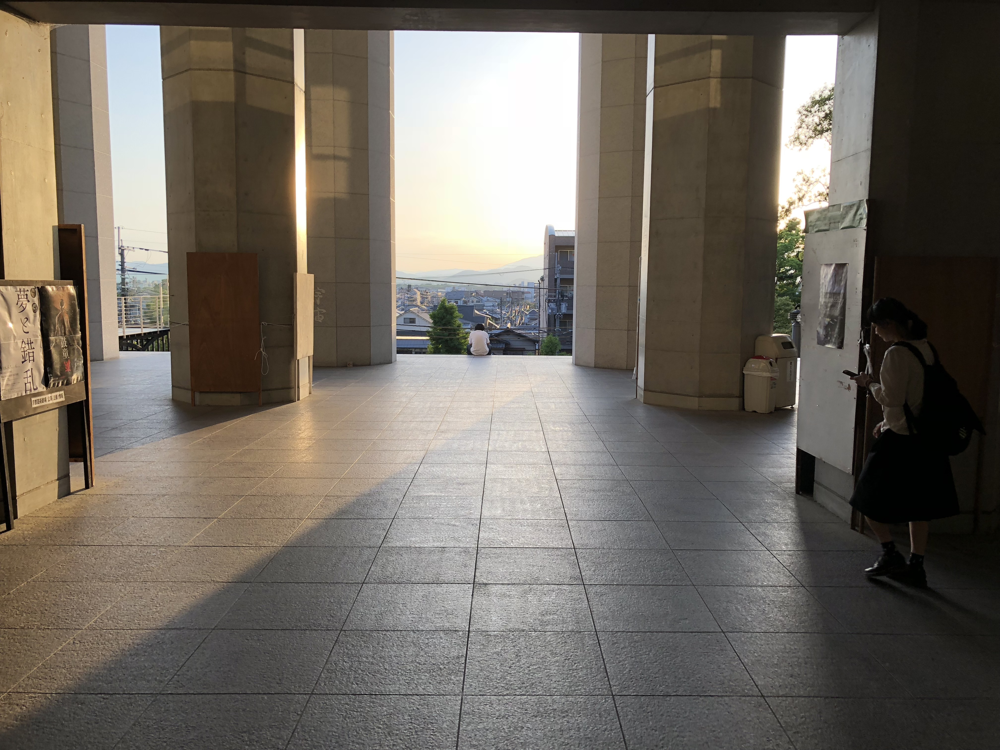
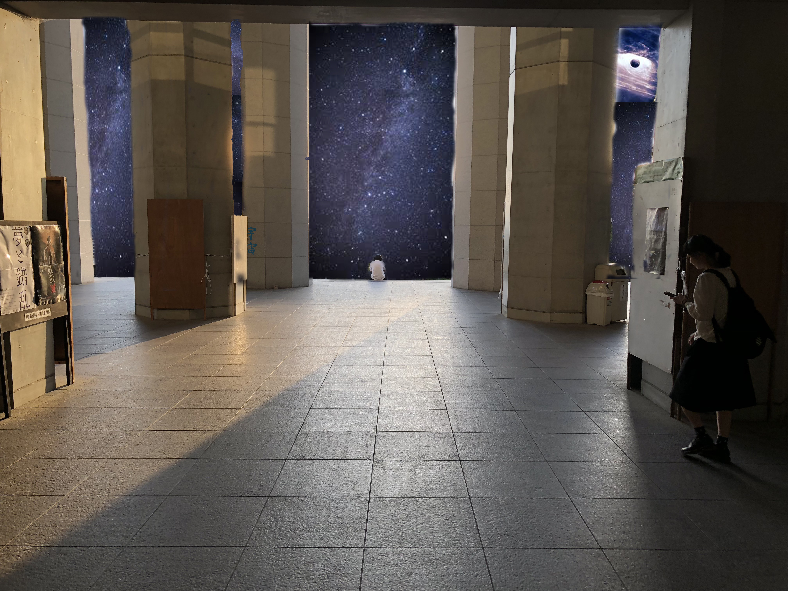

元画像

編集後

画像編集というものを自分でちゃんとしたのは初めてだったかもしれない。
コラ画像などTwitterなどで出回っているのは目にすることは多かったが、いざ自分の手で作ってみると、
なかなか手間がかかる作業だった。
今回の元画像を見た時になぜか宇宙と陽の光を融合したくなったので、宇宙の写真を拾ってきて、明るい
背景を宇宙に変えて見た。
この時に、ただ宇宙を風景にするだけでなく、太陽の代わりになるような星を入れることで、周りの明るさ
の表現をして見た。
今回は画像を貼るだけの作業になってしまったので、次は自分で何か絵などをデザインしたりして、それも
利用していければ良いかなと思った。